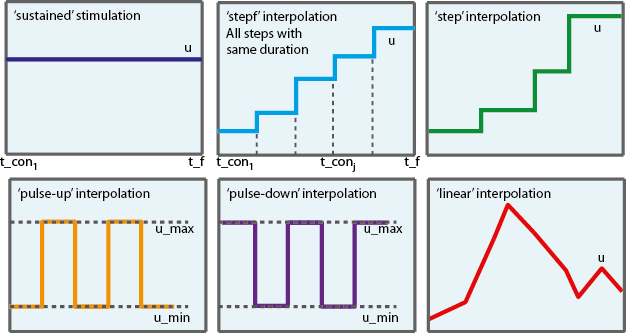
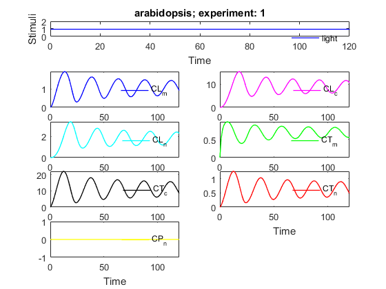

AMIGO_SModel
Contents
Task description
- Solves model under a given experimental scheme and plots states evolution vs time. Remark that
inputs.model.par and inputs.exps.exp_y0{iexp} are used
(by default) for simulation. Alternatively, inputs.PEsol.global_theta_guess, inputs.PEsol.global_theta_y0_guess, inputs.PEsol.local_theta_guess{iexp} and
inputs.PEsol.local_theta_y0_guess{iexp}, will be used, if supplied by the
user.
- AMIGO2 allows to improve efficiency of simulation by generating Frotran or C models. Several initial value problem (IVP) solvers are then
provided to solve stiff, non-stiff or sparse systems. See
Call AMIGO_SModel from command line
It is recommended to keep all inputs in a 'problem_file'.m. SObs task can then be called in two different ways:
1. Using the inputs structure:
> problem_file
> AMIGO_SModel(inputs)
2. Using the input file:
> AMIGO_SModel('problem_file') > AMIGO_SModel('problem_file','run_ident')Example
% TITLE: The circadian clock in Arabidopsis thaliana

%============================ % RESULTS PATHS RELATED DATA %============================ inputs.pathd.results_folder='arabidopsis'; % Folder to keep results (in Results\) inputs.pathd.short_name='arabidopsis'; % Label to identify figures and reports %============================ % MODEL DEFINITION %============================ inputs.model.n_st=7; % Number of states inputs.model.n_par=27; % Number of parameters inputs.model.n_stimulus=1; % Number of stimuli inputs.model.st_names=char('CL_m','CL_c',...% Names of the states 'CL_n','CT_m','CT_c','CT_n','CP_n'); inputs.model.par_names=char('n1','n2','g1','g2','m1','m2','m3','m4','m5','m6',... 'm7','k1','k2','k3','k4','k5','k6','k7','p1','p2',... 'p3','r1','r2','r3','r4','q1','q2'); % Names of the parameters inputs.model.stimulus_names=char('light'); % Names of the stimuli inputs.model.eqns=... % Model equations char('dCL_m=q1*CP_n*light+n1*CT_n/(g1+CT_n)-m1*CL_m/(k1+CL_m)',... 'dCL_c=p1*CL_m-r1*CL_c+r2*CL_n-m2*CL_c/(k2+CL_c)',... 'dCL_n=r1*CL_c-r2*CL_n-m3*CL_n/(k3+CL_n)',... 'dCT_m=n2*g2^2/(g2^2+CL_n^2)-m4*CT_m/(k4+CT_m)',... 'dCT_c=p2*CT_m-r3*CT_c+r4*CT_n-m5*CT_c/(k5+CT_c)',... 'dCT_n=r3*CT_c-r4*CT_n-m6*CT_n/(k6+CT_n)',... 'dCP_n=(1-light)*p3-m7*CP_n/(k7+CP_n)-q2*light*CP_n');
IMPORTANT:
User may select any customised name but: n, t, u, y, ydot, par, tlast, told, pend and v which are reserved words
inputs.model.par=[7.5038 0.6801 1.4992 3.0412 10.0982... % Nominal parameter 1.9685 3.7511 2.3422 7.2482 1.8981 1.2 3.8045... % values 5.3087 4.1946 2.5356 1.4420 4.8600 1.2 2.1994... 9.4440 0.5 0.2817 0.7676 0.4364 7.3021 4.5703 1.0]; %============================================ % EXPERIMENTAL SCHEME (SIMULATION CONDITIONS) %============================================ inputs.exps.n_exp=1; % Number of experiments inputs.exps.exp_y0{1}=[0 0 0 0 0 0 0]; % Initial conditions inputs.exps.t_f{1}=120; % Experiment duration inputs.exps.u_interp{1}='sustained'; % Stimuli definition for experiment 1: % OPTIONS:u_interp: 'sustained' |'step'| %'linear'(default)|'pulse-up'|'pulse-down' % (see Figure) inputs.exps.t_con{1}=[0 120]; % Input swithching times including: % Initial and final time inputs.exps.u{1}=[1]; % Values of the inputs

More information regarding the inputs used in this example can be found here.
%================================ % CALL AMIGO2 from COMMAND LINE %================================ % It is recommended to keep all inputs in a 'problem_file'.m. % AMIGO2 SModel task can be called as follows: % AMIGO_SModel('problem_file','run_ident') or AMIGO_SModel(inputs) AMIGO_Prep(inputs); % To preprocess the model & generate Fortran, C or MATLAB code AMIGO_SModel(inputs); % To perform task SModel
***********************************
AMIGO2, Copyright @CSIC
AMIGO2_R2016a [Oct 2015]
***********************************
*Date: 03-Dec-2015
------>Pre processing....this may take a few seconds.
------>Checking inputs....
------> WARNING message
AMIGO_check_model: You did not specify inputs.model.exe_type, standard will be assumed
By default ode15s will be used.
By default sensmat will be used.
------> Generating Matlab file...
D:\AMIGO2_REPO_2014\AMIGO2R2016\Results\arabidopsis\fcn_arabidopsis.m
------>Files generated....
***********************************
AMIGO2, Copyright @CSIC
AMIGO2_R2016a [Oct 2015]
***********************************
*Date: 03-Dec-2015
------>Checking inputs....
------> WARNING message
AMIGO_check_model: You did not specify inputs.model.exe_type, standard will be assumed
By default ode15s will be used.
By default sensmat will be used.
------> WARNING message
You have not provided neither the number nor the sampling times.
Continuous sampling will be assumed for experiment 1
Note however that you may modify your input file by adding
inputs.exps.n_s{iexp} and inputs.exps.t_s{iexp}
------>Performing simulation for the given set of parameters and initial conditions
-----------------------------------------------
Initial value problem related active settings
-----------------------------------------------
ivpsolver: ode15s
RelTol: 1e-05
AbsTol: 1e-07
Backward Differentiation (BDF): on
MATLAB model file: fcn_arabidopsis
------>Plotting results....
<strong>
------>Results (report and struct_results.mat) and plots were kept in the directory:
</strong><strong>D:\AMIGO2_REPO_2014\AMIGO2R2016\Results\arabidopsis\SModel_arabidopsis_run1</strong>
Click <a href="matlab: cd('D:\AMIGO2_REPO_2014\AMIGO2R2016\Results\arabidopsis\SModel_arabidopsis_run1')">here</a> to go to the results folder or <a href="matlab: load('D:\AMIGO2_REPO_2014\AMIGO2R2016\Results\arabidopsis\SModel_arabidopsis_run1\strreport_arabidopsis_run1.mat')">here</a> to load the results.
 See also
References
Model was taken from:
Locke J.C.W; A.J. Millar; M.S. Turner. Modelling genetic networks with noisy and varied experimental data: the circadian clock in Arabidopsis thaliana. J Theor Biol,2005, 234:383-393.
AMIGO_htmldoc_inputs(inputs,fullfile(pwd,'html','smodelex1.html'));